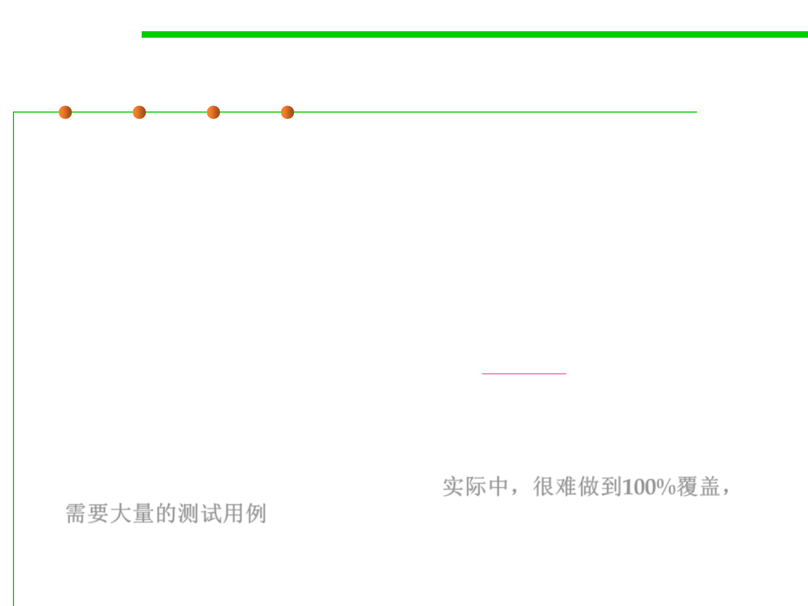

Code Coverage
7.5 Testing and Test-First Programming
▪ Branch coverage is stronger (requires more tests to achieve) than
statement coverage, and path coverage is stronger than branch
coverage.
▪ In industry, 100% statement coverage is a common goal, but even
that is rarely achieved due to unreachable defensive code (like
“should never get here” assertions).
▪ 100% branch coverage is highly desirable, and safety critical industry
code has even more arduous criteria (e.g., MC/DC, modified
condition/decision coverage). 安全相关的软件需要比100%覆盖更高
的要求
▪ Unfortunately 100% path coverage is infeasible, requiring
exponential-size test suites to achieve.实际中，很难做到100%覆盖，
需要大量的测试用例